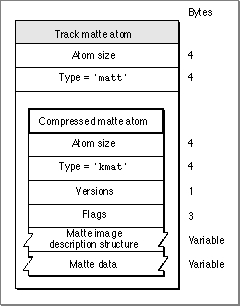

Track Matte Atoms
Track matte atoms specify the mattes for tracks. (A track matte is a pixel map that defines the blending of visual track data. See the chapter "Movie Toolbox" in this book for details.) Figure 4-14 shows the layout of track matte atoms.Figure 4-14 The layout of a track matte atom

You define a track matte atom by specifying these elements: